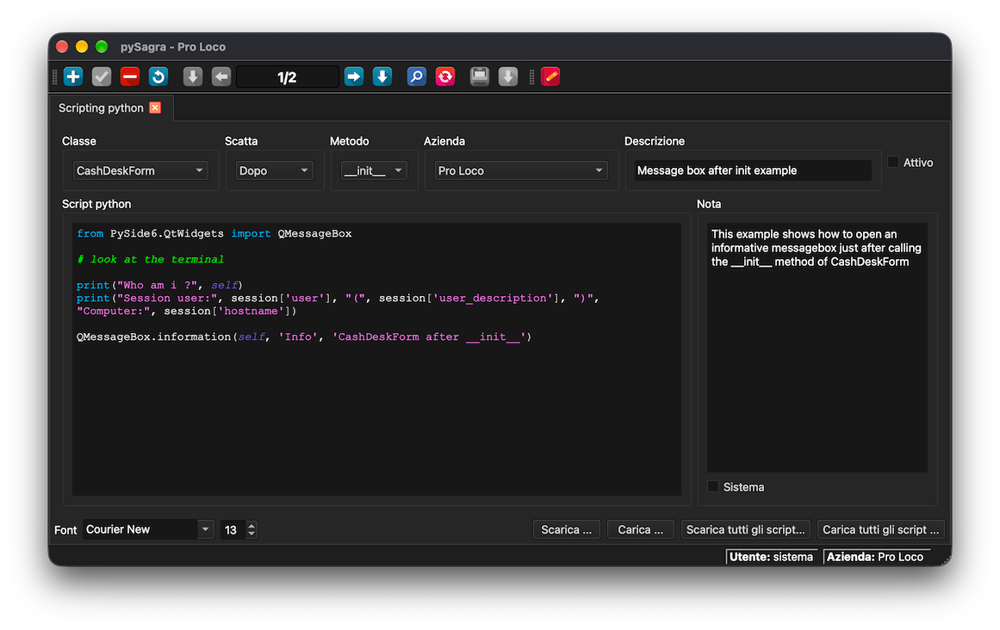

E' possibile memorizzare nel database alcuni script in python che vengono eseguiti allo scattare di alcune condizioni. In questo modo è possibile cambiare il comportamento delle schede e finestre senza modificare il codice sorgente del programma. Ad esempio si può attivare un controllo in più al salvataggio di un articolo.

Nell'esempio in figura vengono stampati dei messaggi in console (se disponibile) e viene aperta una MessageBox di informazioni dopo l'apertura dell'anagrafica delle casse solo se si è sull'azienda Pro loco
Impostazioni dell'anagrafica degli script:
Gli script non hanno un codice, gli viene attribuito un ID automatico e sono identificati dalla combinazione di Classe, Metodo, Scatta e Azienda. Di conseguenza non possono essere inseriti 2 script per la stessa combinazione di parametri indicata.
E' possibile impostare il font e la dimensione del carattere da utilizzare nel riquadro Script python
Gli script possono essere caricati da filesystema a database e scaricati da database a filesystem tramite i tasti:
Il formato scp.zip è un file di testo contenente tutte le impostazioni dell'anagrafica dello script e compresso in formato zip.